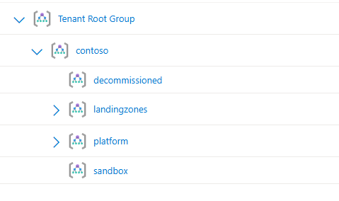
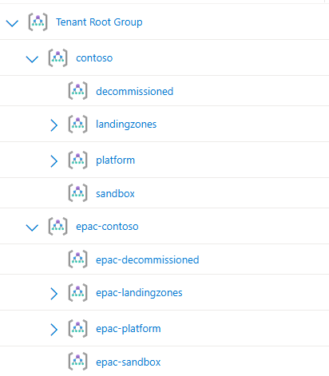
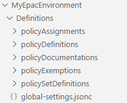

Getting Started with EPAC
EPAC (Enterprise Azure Policy as Code) enables you to manage Azure Policy at scale using Infrastructure as Code principles. This guide will help you understand core concepts and choose the right implementation path for your organization.
Important
Take time to understand the concepts: Understanding EPAC's core concepts is crucial for successful implementation. Don't skip the EPAC Overview section.
What you'll learn:
- Core EPAC concepts and terminology
- Prerequisites and permissions needed
- Implementation options (Hydration Kit vs Manual)
- How to get started quickly
Pre-requisites
Before implementing EPAC, ensure you have the required knowledge, software, and permissions.
Knowledge Requirements
You should understand these Azure concepts:
Software Requirements
Install the following software before proceeding:
Note
Alternative installation: It is recommended to run EPAC using the EnterprisePolicyAsCode PowerShell Module, however, if you cannot use the PowerShell Gallery Module, you can run EPAC directly from source code. See Forking the GitHub Repo for details.
Note
Prerelease versions: Experimental features may be available as prerelease versions. Use Install-Module -AllowPrerelease to access these, but note they are not supported for production use and may introduce breaking changes.
Azure Permissions
You need specific Azure roles to deploy and manage policies with EPAC:
| Role | Required For |
|---|---|
Resource Policy Contributor |
Permissions to create, manage & delete Azure Policy resources |
Role Based Access Control Administrator |
Permissions to create, manage & delete Azure RBAC assignments |
Management Group Contributor |
Create Management Groups (Hydration Kit only) |
EPAC Overview
This section covers the essential concepts you need to understand before implementing EPAC.
Global Settings File
EPAC relies on a global-settings file that contains key information about your environment that EPAC uses as inputs when running. Throughout this section, we will explore some of the key items that will need to be specified in the global-settings file.
The global-settings file is a jsonc files (JSON with Comments) and a Schema is available which can be used in tools such as VS Code to provide code completion.
{
"$schema": "https://raw.githubusercontent.com/Azure/enterprise-azure-policy-as-code/main/Schemas/global-settings-schema.json"
}
Pac Owner ID
The pacOwnerId is a representative name that is used to uniquely identify deployments from this instance of EPAC. We recommend simply generating and using a GUID for this.
{
"$schema": "https://raw.githubusercontent.com/Azure/enterprise-azure-policy-as-code/main/Schemas/global-settings-schema.json",
"pacOwnerId": "11111111-2222-3333-4444-555555555555",
}
Deployment Root Scope
The deploymentRootScope defines where EPAC manages policies. EPAC can deploy and manage policies at this scope and any scope below it in the Azure hierarchy. EPAC is a desired state deployment technology and meant to manage all policy resources within the specified deploymentRootScope and act as the 'single source of truth' for Azure Policy.
Example: Setting deploymentRootScope to the Contoso organization's Management Group (e.g., contoso) allows EPAC to manage policies across all child Management Groups and subscriptions.

Important
Avoid Tenant Root Group: Set your deploymentRootScope to an Intermediate Root Management Group rather than the Tenant Root Group to maintain flexibility and avoid lockout scenarios. This is discussed in further detail in the Azure Cloud Adoption Framework guidance.
EPAC Environments Overview
Like any other solution or application, a development area is required to test and validate the solution before deploying to production. EPAC is the same, however, since Azure Policy affects all resources in your tenant, you need isolated space for policy development.
The Challenge: Testing new policies, or policy updates anywhere within your standard Management Group hierarchy could:
- Disrupt existing workloads
- Create compliance issues
- Impact other teams' work
For example, you may have an Azure policy assigned to control networking configuration, say to manage the firewall settings on storage accounts. This applies for all workload types (platform, security, applications) and for all SDLC environments (production, development, sandbox, etc). You may need to update this policy, for instance to add a new allowed IP address. This policy needs to be tested before it rolls out to any scope within your environment to ensure there's no issues and its behaving accordingly.
The Solution: EPAC has the concept of EPAC Environments, or pacEnvironments providing isolated policy management with its own deployment scope.
- Each EPAC Environment has a symbolic name (
pacSelector) and its own distinctdeploymentRootScope - Each EPAC Environment is targeted separately for deployments, allowing you to manage policies independently.
Typical EPAC Environment Setup
Each EPAC Environment provides isolated policy management with its own deployment scope. This separation is crucial for safe policy development.
Typical Setup:
- Tenant Environment (
tenant01): Manages policies in your main Management Group hierarchy - Development Environment (
epac-dev): Manages policies in a separate, cloned Management Group hierarchy
Benefits of Separate Environments:
- Test policy changes without affecting other workloads
- Validate compliance frameworks before deployment
- Safely experiment with new policy configurations
- Maintain audit trails for policy changes

Tip
The development environment typically mirrors your production Management Group structure, giving you a representative testing environment.
The global-settings file, would then look something like this:
{
"$schema": "https://raw.githubusercontent.com/Azure/enterprise-azure-policy-as-code/main/Schemas/global-settings-schema.json",
"pacOwnerId": "11111111-2222-3333-4444-555555555555",
"pacEnvironments": [
{
"pacSelector": "tenant01",
"deploymentRootScope": "/providers/Microsoft.Management/managementGroups/contoso"
},
{
"pacSelector": "epac-dev",
"deploymentRootScope": "/providers/Microsoft.Management/managementGroups/epac-contoso"
}
]
}
Important
epac-dev:It is strongly recommended to create your development EPAC Environment with a deploymentRootScope that is separate from the rest of your tenant. Remember that EPAC expects to manage ALL policies within its deploymentRootScope and each pacEnvironment is independent, so creating an EPAC Environment that is nested within the deploymentRootScope of another EPAC Environment is generally not recommended.
Tip
Main pacEnvironment Name: You'll notice that we gave our main pacEnvironment the name tenant01 instead of something like production and that "EPAC Environment" has been consistently bolded throughout the documentation. This is to create a distinction between environments that EPAC uses (pacEnvironments) and your general SDLC environments within your company (Prod, test, qa, dev, etc.) and Azure tenant. As discussed, it is important to separate the "Development" EPAC Environment from your regular development environments.
Managed Identities
DeployIfNotExists (DINE) policies require a managed identity to function. If you are not familiar with this, please review the Azure Policy documentation. For each pacEnvironment we will need to specify a default Azure Location (e.g. EastUS) where managed identities used by Azure Policy will be created.
{
"$schema": "https://raw.githubusercontent.com/Azure/enterprise-azure-policy-as-code/main/Schemas/global-settings-schema.json",
"pacOwnerId": "11111111-2222-3333-4444-555555555555",
"pacEnvironments": [
{
"pacSelector": "tenant01",
"deploymentRootScope": "/providers/Microsoft.Management/managementGroups/contoso",
"managedIdentityLocation": "eastus2"
},
{
"pacSelector": "epac-dev",
"deploymentRootScope": "/providers/Microsoft.Management/managementGroups/epac-contoso",
"managedIdentityLocation": "eastus2"
}
]
}
Note
EPAC provides the ability to specify the location individually on each policy assignment. The location specified in the pacEnvironment is a default location incase one is not specified in the assignment.
Multi-Tenant Capabilities
EPAC supports single and multi-tenant configurations including:
- Multiple Azure tenants from a single EPAC instance
- Azure Lighthouse managed tenants
- Cross-tenant role assignments for centralized management
Each pacEnvironment has a tenantId property to enable these scenario(s):
{
"$schema": "https://raw.githubusercontent.com/Azure/enterprise-azure-policy-as-code/main/Schemas/global-settings-schema.json",
"pacOwnerId": "11111111-2222-3333-4444-555555555555",
"pacEnvironments": [
{
"pacSelector": "tenant01",
"deploymentRootScope": "/providers/Microsoft.Management/managementGroups/contoso",
"tenantId": "77777777-8888-9999-1111-222222222222",
"managedIdentityLocation": "eastus2"
},
{
"pacSelector": "epac-dev",
"deploymentRootScope": "/providers/Microsoft.Management/managementGroups/epac-contoso",
"tenantId": "77777777-8888-9999-1111-222222222222",
"managedIdentityLocation": "eastus2"
}
]
}
Tip
It is possible to use this multi-tenant functionality for the "development" EPAC Environment (epac-dev) Discussed above; however, it is not necessary since EPAC has sophisticated partitioning capabilities. Generally, the multi-tenant functionality should be reserved for true multi-tenant scenarios.
Configuration Files and Structure
EPAC uses a simple folder structure to organize all policy resources:

Key Files:
global-settings.jsonc: Central configuration file defining environments and settingspolicyDefinitions/: Custom policy definitionspolicySetDefinitions/: Policy initiative (set) definitionspolicyAssignments/: Policy assignments to scopespolicyExemptions/: Exemptions from policy enforcement
Implementation Path
Quick Start Decision Tree
Are you new to EPAC? → YES → Use the Hydration Kit (recommended)
↓
Do you need advanced customization? → NO → Use the Hydration Kit
↓
Do you have complex multi-tenant requirements? → YES → Manual Configuration
↓
NO → Use the Hydration Kit
Recommended: Hydration Kit
Best for: Most users, especially those new to EPAC
What it provides:
- Interactive setup with guided decisions
- Setup of folder structure & generation of
global-settings.jsonc - Automatic creation of
epac-devenvironment - Starter policies and compliance frameworks
- Starter CI/CD pipeline templates
Next step: Hydration Kit Guide
Alternative: Manual Configuration
Best for: Advanced users with specific customization needs
What it provides:
- Full control over every configuration aspect
- Ability to integrate with existing setups
- Custom folder structures and naming
- Advanced multi-tenant scenarios
Next step: Manual Configuration Guide
Not Sure Which to Choose?
Start with the Hydration Kit as you can always customize the generated configuration afterward. The Hydration Kit creates a solid foundation to build upon.
Need Help?
If you encounter issues during implementation:
- Run scripts interactively to see detailed output
- Debug in VS Code for step-by-step troubleshooting
- Open a GitHub Issue for community support